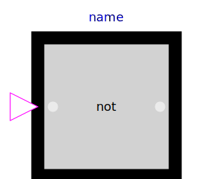
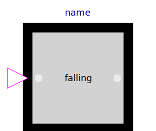
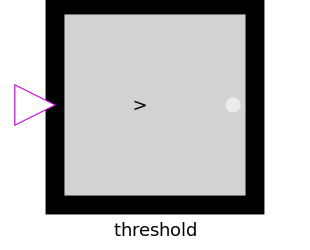
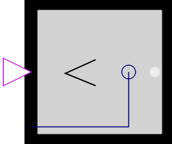
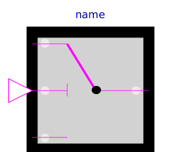
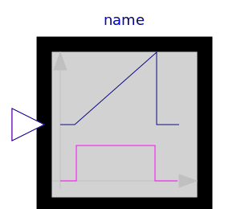
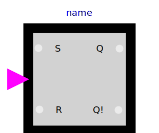
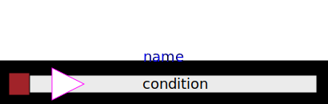

This package provides blocks with Boolean input and output signals to describe logical networks. A typical example for a logical network built with package Logical is shown in the next figure:
The actual value of Boolean input and/or output signals is displayed in the respective block icon as "circle", where "white" color means value false and "green" color means value true. These values are visualized in a diagram animation.
| Name | Description |
|---|---|
| Logical 'and': y = u1 and u2 | |
| Logical 'or': y = u1 or u2 | |
| Xor | Logical 'xor': y = u1 xor u2 |
| Logical 'nor': y = not (u1 or u2) | |
| Logical 'nand': y = not (u1 and u2) | |
|  Not | Logical 'not': y = not u |
| Breaks algebraic loops by an infinitesimal small time delay (y = pre(u): event iteration continues until u = pre(u)) | |
| Output y is true, if the input u has a rising edge (y = edge(u)) | |
|  FallingEdge | Output y is true, if the input u has a falling edge (y = edge(not u)) |
| Output y is true, if the input u has a rising or falling edge (y = change(u)) | |
|  GreaterThreshold | Output y is true, if input u is greater than threshold |
| Output y is true, if input u is greater or equal than threshold | |
| Output y is true, if input u is less than threshold | |
| LessEqualThreshold | Output y is true, if input u is less or equal than threshold |
| Output y is true, if input u1 is greater than input u2 | |
| Output y is true, if input u1 is greater or equal than input u2 | |
|  Less | Output y is true, if input u1 is less than input u2 |
| Output y is true, if input u1 is less or equal than input u2 | |
| Trigger zero crossing of input u | |
|  LogicalSwitch | Logical Switch |
| Switch between two Real signals | |
| Transform Real to Boolean signal with Hysteresis | |
| On-off controller | |
| Triggered trapezoid generator | |
|  Timer | Timer measuring the time from the time instant where the Boolean input became true |
|  RSFlipFlop | A basic RS Flip Flop |
|  TerminateSimulation | Terminate simulation if condition is fulfilled |